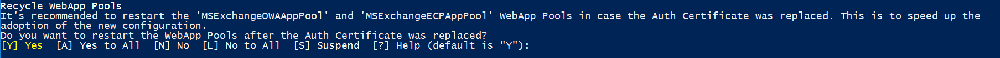

MonitorExchangeAuthCertificate
Download the latest release: MonitorExchangeAuthCertificate.ps1
The MonitorExchangeAuthCertificate.ps1 PowerShell script can help you to manage the Auth Certificate used by multiple security features in Exchange Server. The script can be used to renew an already expired Auth Certificate or repair an invalid Auth Configuration in which the current Auth Certificate isn't available on all Exchange Servers running the Mailbox or Client Access Server (CAS) role. It can also manage rotation of the Auth Certificate to ensure a smooth transition to a new Auth Certificate.
The script comes with a manual execution mode and an automation mode that works using the Windows Task Scheduler.
Requirements
To run the script, you must be a member of the Organization Management role group. The script must be run from an elevated Exchange Management Shell (EMS) command prompt on an Exchange Server running the Mailbox role. The script cannot be run on an Exchange Management Tools-only machine.
Logging
Each run of the script is logged to the following directory: <ExchangeInstallPath>\Logging\AuthCertificateMonitoring
The naming syntax of the log file is: <AuthCertificateMonitoringLog>_<Timestamp>.txt
NOTE: If the <ExchangeInstallPath> directory doesn't exists, the log file will be written to the following directory: <$env:TEMP>\Logging\AuthCertificateMonitoring
How To Run
Examples:
The following syntax runs the script in validation-only mode. It will show you the required Auth Certificate renewal action that would be performed if the script is executed in renewal mode.
PS C:\> .\MonitorExchangeAuthCertificate.ps1
The following syntax executes the script in renewal mode with user interaction. The required Auth Certificate renewal action will be performed, and the administrator might see prompts that need to be confirmed before the script continues:
PS C:\> .\MonitorExchangeAuthCertificate.ps1 -ValidateAndRenewAuthCertificate $true
If you respond with 'Y', then the script will run in unattended mode and will not prompt you again.

It's recommended to recycle the WebApp Pools when the active Auth Certificate is replaced. You should respond with 'Y'.

It's not recommended to replace the internal transport certificate with the newly created Auth Certificate. You should respond with 'N'.

The following syntax executes the script in renewal mode without user interaction. The required Auth Certificate renewal action will be performed. In unattended mode the internal SMTP certificate is replaced with the new Auth Certificate and then set back to the previous one. The script also restarts the MSExchangeServiceHost service and the MSExchangeOWAAppPool and MSExchangeECPAppPool WebApp Pools when the primary Auth Certificate has been replaced.
NOTE: The script creates a new internal transport certificate if the previously configured one wasn't found on the machine where the script is run.
PS C:\> .\MonitorExchangeAuthCertificate.ps1 -ValidateAndRenewAuthCertificate $true -Confirm:$false
The following syntax runs the script in renewal mode without user interaction. We only take the Exchange servers into account if they are reachable and will perform the renewal action if required.
PS C:\> .\MonitorExchangeAuthCertificate.ps1 -ValidateAndRenewAuthCertificate $true -IgnoreUnreachableServers $true -Confirm:$false
The following syntax executes the script in renewal mode without user interaction. The renewal action will be performed even when an Exchange hybrid configuration is detected.
NOTE: You must re-run the Hybrid Configuration Wizard (HCW) after the active Auth Certificate has been replaced.
PS C:\> .\MonitorExchangeAuthCertificate.ps1 -ValidateAndRenewAuthCertificate $true -IgnoreHybridConfig $true -Confirm:$false
The following syntax executes the script in scheduled task mode. In this mode, the script performs the following steps:
NOTE: It doesn't matter what you type into the Username box, so you can enter, for example abc. Make sure to use a password that complies with the password guidelines of your organization.
PS C:\> .\MonitorExchangeAuthCertificate.ps1 -ConfigureScriptToRunViaScheduledTask -Password (Get-Credential).Password
NOTE: The ConfigureScriptToRunViaScheduledTask parameter can be combined with the IgnoreHybridConfig and IgnoreUnreachableServers parameter.
- It creates a new Exchange Role Group,
Auth Certificate Management, which has the following roles assigned:View-Only Configuration,View-Only Recipients,Exchange Server Certificates,Organization Client Access - It creates a new user account with the following User Principal Name (UPN):
SystemMailbox{b963af59-3975-4f92-9d58-ad0b1fe3a1a3}@contoso.local - The user account is mail-enabled and hidden from address lists
- The user account is added to the local Administrators group on the Exchange Server where the script is executed
- The user account is added to the
Auth Certificate ManagementExchange Role Group - The script is copied to
<ExchangeInstallPath>\Scripts - A new scheduled task is registered to run the script in context of the
SystemMailbox{b963af59-3975-4f92-9d58-ad0b1fe3a1a3}@contoso.localuser
The following syntax runs the script in Active Directory (AD) account creation mode which can be useful when Exchange runs in AD Split Permissions mode. An AD administrator with sufficient permissions to create a user in AD (e.g., a Domain Admin) can run the script in this mode to create the SystemMailbox{b963af59-3975-4f92-9d58-ad0b1fe3a1a3}@contoso.local account. The account can then be passed by the Exchange administrator via AutomationAccountCredential parameter as outlined in the next example.
In this mode, the script can be executed from an elevated PowerShell command prompt (no EMS required) running on a non-Exchange Server machine with the ActiveDirectory PowerShell module installed, as it only uses cmdlets which are coming with this module.
NOTE: We recommend creating a user account in the same domain where Exchange was installed. You can specify the domain by using the ADAccountDomain parameter.
PS C:\> .\MonitorExchangeAuthCertificate.ps1 -PrepareADForAutomationOnly -ADAccountDomain "root.local"
The following syntax executes the script in scheduled task mode, but it doesn't create the SystemMailbox{b963af59-3975-4f92-9d58-ad0b1fe3a1a3}@contoso.local user account. Instead, the account passed via AutomationAccountCredential parameter is used. Should a renewal action be performed, then email notifications will be sent to John.Doe@contoso.com".
PS C:\> .\MonitorExchangeAuthCertificate.ps1 -ConfigureScriptToRunViaScheduledTask -AutomationAccountCredential (Get-Credential) -SendEmailNotificationTo "John.Doe@contoso.com"
The following syntax runs the script in Auth Certificate export mode. In this mode, the script exports the current and (if configured) the next Auth Certificate as DER (Distinguished Encoding Rules) binary encoded PKCS #12 files, using the .pfx file name extension.
The naming syntax for the exported .pfx file is: <CertificateThumbprint>-<Timestamp>.pfx
PS C:\> .\MonitorExchangeAuthCertificate.ps1 -ExportAuthCertificatesAsPfx
The following syntax executes the script in update-only mode. In this mode, the script only checks for a more current version of the script and downloads it if found.
PS C:\> .\MonitorExchangeAuthCertificate.ps1 -ScriptUpdateOnly
Parameters
| Parameter | Description |
|---|---|
| ValidateAndRenewAuthCertificate | This optional parameter enables the validation and renewal mode which will perform the required actions to replace an invalid/expired Auth Certificate or configures a new next Auth Certificate if the current Auth Certificate expires in < 60 days or the certificate configured as next Auth Certificate expires in < 120 days. |
| IgnoreUnreachableServers | This optional parameter can be used to ignore if some of the Exchange servers within the organization cannot be reached. If this parameter is used, the script only validates the servers that can be reached and will perform Auth Certificate renewal actions based on the result. Parameter can be combined with the IgnoreHybridConfig parameter and can also be used with the ConfigureScriptToRunViaScheduledTask parameter to configure the script to run via scheduled task. |
| IgnoreHybridConfig | This optional parameter allows you to explicitly perform Auth Certificate renewal actions (if required) even if an Exchange hybrid configuration was detected. You need to run the HCW after the renewed Auth Certificate becomes the one in use. Parameter can be combined with the IgnoreUnreachableServers parameter and can also be used with the ConfigureScriptToRunViaScheduledTask parameter to configure the script to run via scheduled task. |
| PrepareADForAutomationOnly | This optional parameter can be used in AD Split Permission scenarios. It allows you to create the AD account which can then be used to run the Exchange Auth Certificate Monitoring script automatically via Task Scheduler. |
| ADAccountDomain | This optional parameter allows you to specify the domain which is then used by the script to generate the AD account used for automation. Parameter can be combined with the PrepareADForAutomationOnly parameter. |
| ConfigureScriptToRunViaScheduledTask | This optional parameter can be used to automatically prepare the requirements in AD (user account), Exchange (email enable the account, hide the account from address book, create a new role group with limited permissions) and finally it creates the scheduled task on the computer on which the script was executed (it has to be an Exchange server running the mailbox role). |
| AutomationAccountCredential | This optional parameter can be used to provide a different user under whose context the script is then executed via scheduled task. |
| SendEmailNotificationTo | This optional parameter can be used to specify recipients which will then be notified in case that an Exchange Auth Certificate renewal action was performed. The script uses the EWS API to send out email notifications. Make sure that the user in whose context the script is running is allowed to use EWS. |
| TrustAllCertificates | This optional parameter can be used to trust all certificates when connecting to the EWS service to send out email notifications. |
| TestEmailNotification | This optional parameter can be used to test the email notification feature of the script. |
| Password | Parameter to provide a password to the script which is required in some scenarios. |
| ExportAuthCertificatesAsPfx | This optional parameter can be used to export all on the system available Auth Certificates as password protected .pfx file. |
| ScriptUpdateOnly | This optional parameter allows you to only update the script without performing any other actions. |
| SkipVersionCheck | This optional parameter can be used to skip the Auto Update feature to download the latest version of the script. |